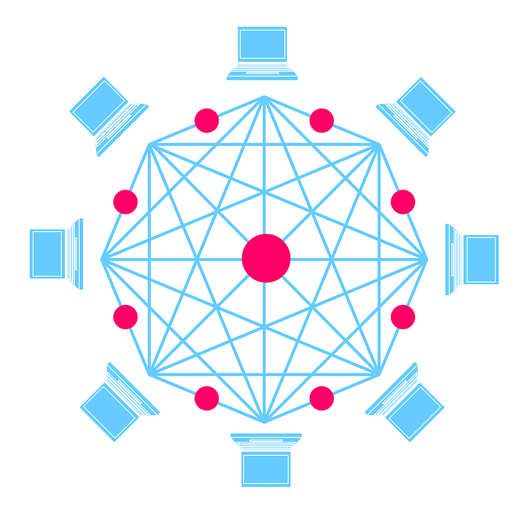
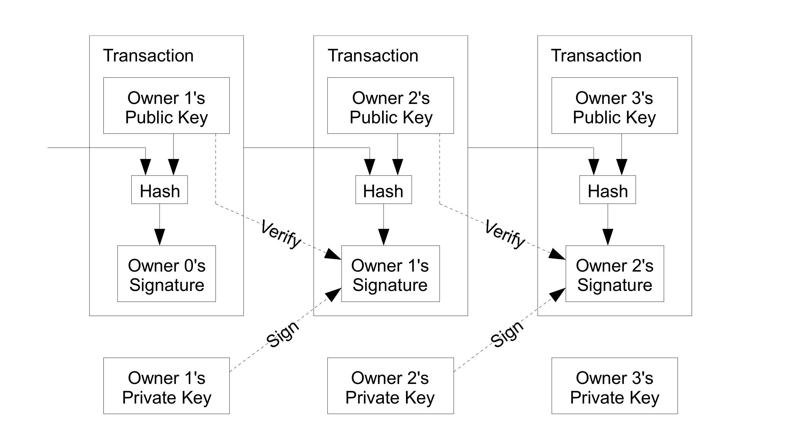
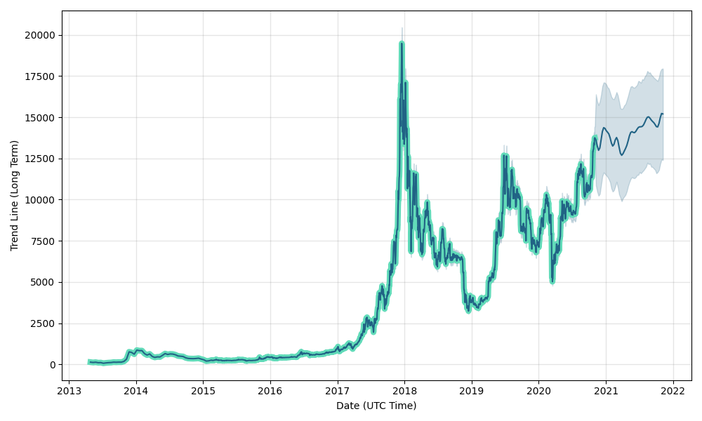

The Blockchain Database
The most important contribution that bitcoin brought to the world of informatics is the first Blockchain Database.
A generic blockchain can be described as a P2P network which mantains some shared state (in the bitcoin system this shared state is the sequence of transactions).
This data is stored in a linked-list-like data structured (which is made of linked blocks, which is where the name blockchain database derives from),
new blocks containing new data can be added only at the end of the list and once added the data can't be modified.
Each block points to the block that came before it,
the genesis block is the only exception that doesn't point to a previous block since it's the first one and it's normally hardcoded in the software.
To prevent data modification and to guarantee the integrity of the
data, Hashing is used.
Sice the block's hash is calculeted based on the previous block's hash but also by the content of the new block, modify data would change the Hash
of the block which contains it, as well as the hash of all subsequent blocks, that's what makes really easy to spot and correct any modified data in the blockchain.
The creation of a new block, must follow a set of rules called the consensus protocol (in the bitcoin system this protocol is the proof of work), since creating a new block requires a lot of computational power,
this protocol usally define a reward for the block creator, in order to incentify people to do so.
Bitcoin is non other than the first application of this new type of database wich was used to rapresent a monetary value. Other applications of this new technology include others cryptocurrencies (like Litecoin and Ether )
and more importantly smart contracts.
The First Decentralized Digital Currency Indipendent From Financial Institutions Or Governments
The bitcoin is the first cryptocurrency, a purely digital asset, used as medium of exchange which is managed controlled and created using cryptography, rather
than relying on a central authorities.
With traditional currency, in order to avoid fraud and prevent double spending, we rely on trusted third parties (financial institutions) to process the transactions.
This metod has a number of issues, one of the main one is that banks require fees and commission, they can charge up to 10% of the transaction ammount, just to send the money. The second main problem is that in order to process the transaction,
we are giving away all our personal data, loosing our privacy.
Bicoin solved both of this issues by replacing the trusted party with a peer to peer network and by ensuring anonimity in transactions, using id keys.
In the bitcoin system in order to make a transaction, you will need a bitcoin account, which can be created by generating a cryptographic key pair, a public key and a private key.
The hash of the public key is used as your account address, while the private key is kept secret and it's used to prove that you have ownership of this bitcoin account.
In order to send bitcoin, you have to boradcast a signed message (for signing a message the private key is used) with the ammount of bitcoins and destination account to the network.
This message is sent to all nodes and miners, who will
verify that it is correctly formatted, if it is, at this point the transaction is still unconfirmed. once a miner include the transaction in a new block the transaction has been confirmed. From here the more block exists after your transaction,
the more secure your transaction will be.
Since no one knows to whom a key belong, anonimity is guaranteed and there are no fees or commitions involved, since the miners are rewarded by the system for processing transaction with new bitcoins.

The Best Method To Secure And Mantain Permanent Data
This new monetary exchange system is also far more secure than a centralized one, since it use an enormous ammount of computational power to ensure the unicity of the data and the creation of the chain, in order to perform a successfull attack to the system, a bad actor would need to operate 51%
of the computing power that makes up Bitcoin.
(as for May 2020 Bitcoin has around 47,000 nodes and the number is still growing, rendering a successfull attack even more improbable).
In the event that an attack was to happen, the Bitcoin nodes (people whose pc take part in the Bitcoin network), would
likely fork to a new blockchain making the resources used and the attack a waste.
Bitcoin Financial Impact
Bitcoin was also the first digital asset that was accepted by society as a new type of currency, From the mid 2010s, some businesses and no profit organizations, began accepting bitcoin in
addition to traditional currencies.
The new currency was basically worthless until February 2011 where for the first time 1 Bitcoin was worth $ 1.
From that moment on, the currency started gaining a huge exposure, thanks to numerous controvercies, like the currency bein used in internet's black markets, to pay for illegal goods such as drugs and weapons, but
also regarding fraoud accusation and bankrupcy of the most popular bitcoin exchange website at the time Mt.Gox who went under in 2014.
During this period the value of 1 bitcoin was flutuating between 1000 and 200 USD.
In 2014, the U.S. Commodity Futures Trading Commission, (a U.S. regulatory agency), approved for the first time in history the listing of an over-the-counter swap product based on the price of a bitcoin.
Microsoft and Dell also started to accept bicoin as payment in 2014.
More and more businesses began accepting bicoin as payment, but in 2017 also govenments, like Japan and Russia legalized Bitcoins as legitimate payment methods.
On 1 August 2017 something peculiar happend, bitcoin was spitted into two derivative digital currencies, the Bitcoin (BTC) (that has a chain with 1 MB blocksize limit) and the Bitcoin Cash (BCH) (that has a chain with 8 MB blocksize limit). The split is called "The Bitcoin Cash Hard Fork".
The ever growing intrest in the bitcoin currency and his acceptance by governments, caused a very fast increase in his value until December 2017 where it reached his peak value. At that time,
a single bitcoin was worth nearly $20,000.
At this point the speculative bubble created around bitcoins reached his peak and started deflating as people started selling their bitcoins. The price dropped at 3,300 USD per Bitcoin in december 2018.
At this day (08.11.2020) a Bitcoin is worth 15,328.40 USD and we have mined around 18.5 million bitcoins out of the 21 million maximum total bitcoin in circulation.
